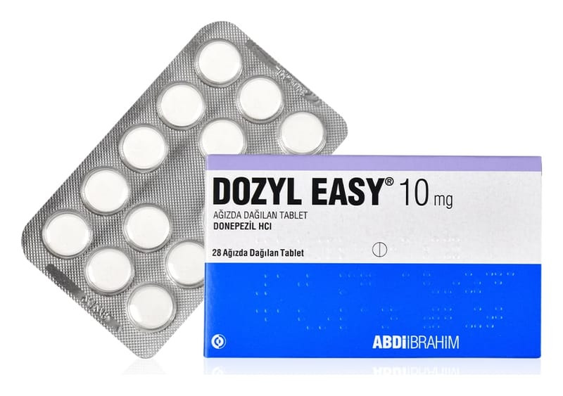

Dozyl Easy 10 mg Ağızda Dağılan Tablet, 84 Adet

Ne için kullanılır
KT · Bölüm 1DOZYL EASY, beyaz renkte ve yuvarlak tablettir. Her bir tablet 10 mg donepezil hidroklorür içerir ve 14, 28 ve 84 tabletlik ambalajlarda sunulmuştur.
DOZYL EASY, hafif ve orta şiddetli Alzheimer tipi bunama belirtilerinin tedavisinde kullanılır ve etkin maddesi donepezil hidroklorür, asetilkolinesteraz inhibitörleri olarak anılan bir ilaç sınıfına aittir.